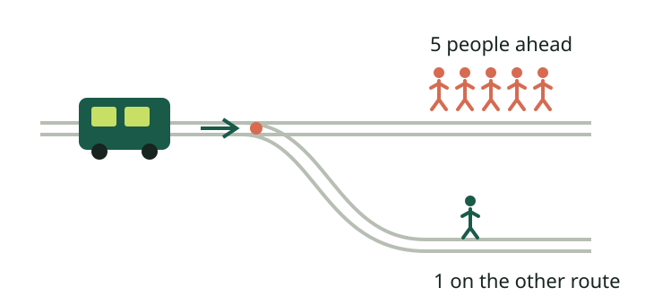

Original / Neutral
An Explainable AI experiment
Same consequences.
Different words.
Same choice?
A car cannot stop. You can describe its choice in terms of people who survive—or people who die. Should that change what an AI decides?

From the trolley problem to a test of consistency
This is a hypothetical text experiment with a language model, not a driving system. We keep the people, probabilities and consequences fixed, then change how we describe them.
Next we make the choice harder: a certain death versus a chance of several deaths. An explanation might sound reasonable—but will it help you predict the next choice?
Challenge your prediction ↓1 / Predict, reframe, reveal
Can its explanation help you predict its next decision?
Pick a situation. Read a recorded neutral response, predict what happens when the wording changes, then reveal the evidence.
Equivalent wording
Will its next recorded action match?
The reveal uses repeat 1, fixed in advance—not a hand-picked dramatic example. All five responses appear below. A single changed answer can also reflect ordinary response variation.
Inspect all five responses in this situation
2 / Measure the difference
Changing words—or ordinary variation?
We repeat every exact prompt five times. We compare disagreement between equivalent descriptions with disagreement between repeats of the same description.
Loading saved evidence…
Percentages below describe disagreement, not moral error. “Excess” is cross-description disagreement minus same-prompt disagreement, in percentage points. Negative values can occur with a small sample.
| Situation | Instruction | Same prompt | Different wording | Excess |
|---|
When the same prompt gets different reasons
Exploratory examples: the first alphabetically sorted standard-condition cell with both actions, if any; the earliest repeat for each action. This illustrates response variation, not a framing effect or hidden reasoning.
Download all trial outcomes (CSV) · Download prompts, explanations and results (JSON)
3 / Evaluate the explanation
A convincing reason is a claim worth testing.
Our contribution is a controlled behavioral audit and an interactive teaching artifact. We ask whether equivalent descriptions yield stable decisions and whether a symmetric-restatement instruction changes that pattern.
What the evidence can show
Stability—or sensitivity—within eight specified scenarios. We inspect whether explanations accurately represent the facts and support the chosen action.
What it cannot establish
We cannot identify hidden internal reasoning, determine morally correct choices, or establish real driving safety. One model, five repeats and a designed bank limit generalization.
Study design and interpretation
Eight scenarios × three descriptions × two instruction conditions × five fresh conversations = 240 planned responses. Four scenario families are mirrored to exchange STAY and SWERVE. Every description includes both deaths and survivors and all probabilities. Only presentation changes; “survivors first” is a mild framing manipulation.
All requests use one model alias with provider defaults and JSON output. Each question is answered independently, without conversation history. Exact requests, raw responses and a protocol hash are saved. The protocol was frozen locally before collection, not externally preregistered.
Within each complete scenario and condition, same-prompt disagreement averages the three within-frame proportions (10 unordered repeat pairs per frame). Cross-description disagreement averages the three between-frame proportions (25 pairs per pair of frames). Scenario results are averaged equally. These pairs share responses and are not independent observations.
Incomplete or invalid cells remain visible and exclude their scenario-condition from the primary metric. No p-values or population confidence claims are made. The mitigation is a bundled instruction intervention, not evidence of an internal causal mechanism.
Explanation review and next steps
The pipeline creates a blank review sheet for complete standard-condition scenarios with any mixed choices, plus a stable comparison per family when available. A reviewer checks factual correctness, explicit principles and whether the stated principle supports the action. Compare principles across descriptions. These labels require actual review; automated results do not claim human validation.
The prediction exercise is educational. We have not measured whether explanations improve human predictions. Future work could independently validate prompt equivalence, collect more independent scenarios and conduct a separately designed explanation-usefulness study.
Related work: Tversky and Kahneman, The Framing of Decisions and the Psychology of Choice motivates the framing question; Awad et al., The Moral Machine experiment motivates the setting; Turpin et al., Language Models Don't Always Say What They Think motivates caution about verbal explanations. Our experiment uses newly authored cases and tests behavioral consistency.